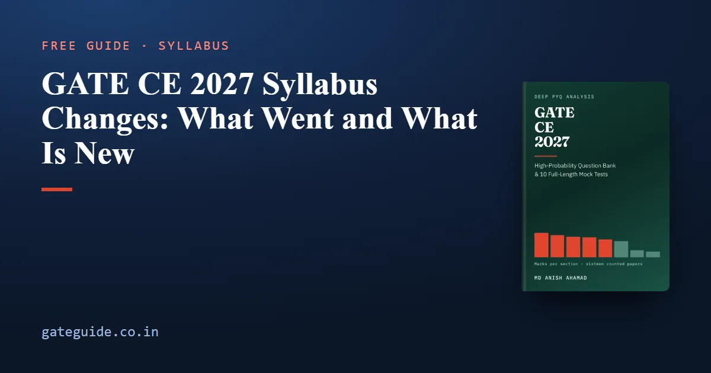

GATE CE 2027 Syllabus Changes: What Went and What Is New

The GATE 2027 Civil Engineering syllabus, compared word by word with the 2026 one from the two official PDFs, has nine phrases gone, twenty-nine new, four differing only in spelling and 117 unchanged. The eight sections are the same eight. Everything that moved, moved inside them.
In this guide
The two directions matter differently. The removals account for 25 marks of the sixteen counted papers from 2019 to 2026, and you will meet those questions in past papers. Most of the additions account for none. Thirteen were never examined in any counted paper; a few had been set under older wording before 2027 named them — streamflow measurement in 2023 Set 2, Q.63, for one. The thin record behind most of them is exactly why they need the most deliberate attention.
Key takeaways
- Nine phrases gone, twenty-nine new, 117 unchanged, compared from the official 2026 and 2027 PDFs.
- 25 of the 1,600 counted marks from 2019 to 2026 now sit outside the syllabus. Prestressed concrete is 14 of them.
- The prestressed concrete removal has a fair counter-argument, and it is stated below.
- Transportation Planning is new and has drawn zero marks in 1,040 counted questions. There is no pattern to learn from it.
- Geomatics was rewritten rather than adjusted. Past Geomatics questions are the weakest guide to future ones anywhere in the paper.
The headline numbers
| Count | |
|---|---|
| Phrases carried over unchanged | 117 |
| Phrases gone in 2027 | 9 |
| Phrases new in 2027 | 29 |
| Phrases differing only in spelling | 4 |
| Counted marks on removed material, 2019–2026 | 25 of 1,600 |
How a change was decided
Comparing phrases by how similar their text looks does not work. 2026's "Design of beams, slabs, columns" against 2027's "Design and detailing of beams, slabs, columns, and isolated footings" scores badly on similarity and is obviously the same requirement in more words.
So the test is vocabulary. A phrase counts as gone when one of its content words has no relative anywhere in the 2027 document — no word that contains it and no word it contains. Differences of spelling alone are held back and not claimed as changes: run-off against runoff, Meyerhoff against Meyerhof, and cross-sectional against the 2027 PDF's own typo, crosssectional. Put those in a revision plan and you are preparing for changes that never happened.
What was removed, and what it was worth
| Removed from the syllabus | Section | Counted marks | Where it was asked |
|---|---|---|---|
| Prestressed concrete beams | Structural | 14 | seven papers, 2 marks each |
| Free vibration of an undamped single-degree-of-freedom system | Structural | 8 | 2019 Set 1, CE Q.3; 2021 Set 2, CE Q.7 and CE Q.38; 2022 Set 2, Q.37; 2024 Set 2, Q.37 |
| Dynamic pile formulae | Geotechnical | 2 | 2019 Set 2, CE Q.54 |
| Remote sensing and GIS | Geomatics | 1 | 2023 Set 1, Q.23 |
| The flexibility method | Structural | none | — |
| Plate girders | Structural | none | — |
| Horizontal and vertical curves, as a Geomatics topic | Geomatics | none | — |
Total: 25 marks. The 2019 Set 2 pile question used the Engineering News Record formula, which is a dynamic formula; 2027 reads "Deep foundations – static formulae", and the word dynamic appears nowhere else in the document. The one remote sensing mark is a raster image resolution question.
Two of the zero-mark entries need a sentence each. Horizontal and vertical curves leave Geomatics, but Transportation still names horizontal and vertical alignments, and an alignment is built of curves. Nothing is saved by skipping them. Random variables lose the phrase "discrete and continuous" in Mathematics, but in its place 2027 names probability mass, density and cumulative distribution functions. That is a widening, not a removal.
Prestressed concrete: the case, and the case against
This is the largest single removal. The 2026 Concrete Structures line ended "Bond and development length; Prestressed concrete beams." The 2027 line ends "Bond and development length." and names isolated footings in its place.
It was a 2-mark question in seven of the sixteen counted papers: 2020 Set 1, CE Q.44; 2020 Set 2, CE Q.41; 2021 Set 1, CE Q.39; 2022 Set 2, Q.39; 2024 Set 1, Q.50; 2026 Set 1, Q.45; and 2026 Set 2, Q.48. That is 14 marks of recent examination history, including both of the most recent papers.
The counter-argument is not silly: 2027 still names design and detailing of beams, and a prestressed beam is a beam. The case against it is that 2026 named "Design of beams, slabs, columns" and "Prestressed concrete beams" as two separate items, so the organisers themselves did not read the first as covering the second. Deleting the separate line reads as a deletion rather than a re-absorption.
Either way, a syllabus is not a guarantee. A candidate with time in hand loses nothing by spending an hour on prestressed concrete. A candidate short of time should spend that hour on the new topics below.
What is new, section by section
| Section | Named for the first time in 2027 |
|---|---|
| Engineering Mathematics | axioms and theorems of probability; statistical independence; pmf, pdf and cdf |
| Structural | virtual work; Castigliano's second theorem; consistent deformations; influence lines and moving loads; isolated footings; plastic analysis of portal frames |
| Geotechnical | sheet piles; ground improvement techniques |
| Water Resources | prismatic and mobile channels; rapidly varied flow; flow past sharp crested weirs; river training structures; streamflow measurements |
| Environmental | tertiary treatment; basics of landfill design and operation |
| Transportation | Transportation Planning (four-step travel demand modelling); classification of roadways; design vehicle; interchanges; level of service |
| Geomatics | GNSS and geodetic surveying; cartography and map projections; cadastral surveying; space resection, parallax equations, camera calibration; digital photogrammetry |
| Construction | cement hydration and microstructure; chemical and mineral admixtures; AOA and AON networks; project updating and monitoring; types of contracts; long wall, short wall and centre line estimation |
Streamflow measurements is not one of the twenty-nine. The word-by-word test cannot see it, because streamflow contains flow, which the 2026 document uses throughout; it is a genuine addition all the same, since the word stream appears nowhere in the 2026 document.
Some of these are cheap. The Mathematics additions are definitions, and definitions are quick to learn. A flow-past-a-sharp-crested-weir question comes down to a single discharge relation with a three-halves power of the head in it.
Why most new topics cannot be prepared from past papers
A past paper is set to its own syllabus, so for most newly named topics a count of past questions is not low evidence; it is no evidence. The record is silent, not negative. Thirteen of the additions were never examined in any of the sixteen papers. Newly named is not the same as never examined, though: a few were set before 2027 named them, under older wording — streamflow measurement in 2023 Set 2, Q.63, mobile channels in 2024 Set 1, Q.20, and plastic analysis of a portal frame in 2026 Set 2, Q.49 — and for those, past papers do help.
Transportation Planning is the sharpest case. The 2026 Transportation section had three topics — Transportation Infrastructure, Highway Pavements, Traffic Engineering — and the words travel, trip, demand, choice and assignment appear nowhere in the 2026 document. 2027 adds a fourth: four-step travel demand modelling, meaning trip generation, trip distribution, mode choice and traffic assignment. Across all 1,040 counted questions, it has drawn zero marks.
Read alone, an eight-year zero says skip it. Read against the syllabus, it says nothing at all: the topic was not on the syllabus, and examiners seldom set what the syllabus does not name. There is no question pattern to learn and no way to judge the depth expected. What there is, is a named topic in a section that averages 10 marks. Learn what each of the four steps does and how its output feeds the next. As a prediction, and only that: a topic the organisers went out of their way to add gives the first examiner under the new syllabus a visible reason to use it.
Geomatics was rewritten rather than adjusted. Remote sensing, GIS and curves went out; GNSS, geodetic and cadastral surveying, cartography, map projections, space resection, parallax equations, camera calibration and digital photogrammetry came in. The section averages 4.4 marks with a range of 1 to 7. Photographic scale and flying height survive, so those old photogrammetry questions stay useful. Almost everything around them is new, so read the 2027 Geomatics text before you open a past paper, not after.
What to do about it
Four rules cover the whole change list:
- If the 2027 syllabus names it and past papers examine it every year, it is certain. Know it cold.
- If 2027 names it for the first time, past papers will seldom have practised it for you, so read it — nothing else will make you.
- If 2027 names it and the record is thin, read it anyway. A thin count is often a counting artefact.
- If 2027 no longer names it, recognise it in a past paper and move on.
The GATE CE 2027 book quotes every changed line against its 2026 wording and identifies every affected question in the counted record. Its question bank covers the newly named topics that past papers mostly cannot, and says openly that its three lowest confidence figures sit on three of them.
Then confirm the syllabus yourself. It is a short document on the official GATE 2027 site, organised this year by IIT Madras; check the current notification there, along with the exam dates and the registration and fee rules. General Aptitude is not part of the CE syllabus document and remains 15 marks, so the aptitude section needs no change at all.
Frequently asked questions
Has the GATE CE syllabus changed for 2027?
Yes. Compared word by word with the official 2026 document, the 2027 Civil syllabus has nine phrases gone, twenty-nine new, four that differ only in spelling and 117 unchanged. The eight sections are the same eight. The removals account for 25 marks of the counted past papers; most of the additions have no past-paper history, though a few were examined under older wording before 2027 named them. Confirm against the current PDF on the official site.
Is prestressed concrete removed from the GATE CE 2027 syllabus?
The separate line is gone. The 2026 Concrete Structures line ended with prestressed concrete beams; the 2027 line ends at bond and development length and names isolated footings instead. It was a two-mark question in seven of the sixteen counted papers, 14 marks in all. The counter-argument is that 2027 still names design and detailing of beams.
What is Transportation Planning in the GATE CE 2027 syllabus?
A new fourth topic in Transportation Engineering: four-step travel demand modelling, meaning trip generation, trip distribution, mode choice and traffic assignment. The 2026 syllabus had no planning topic, and across all 1,040 counted questions from 2019 to 2026 it drew zero marks. There is no past-paper pattern to learn from, so it has to be read from the syllabus.
Can I still use old GATE CE papers after the 2027 syllabus change?
Yes. Of 1,600 counted marks across the sixteen papers from 2019 to 2026, only 25 test material the 2027 syllabus no longer names. Recognise those questions and move on. What old papers mostly cannot do is prepare you for the newly named phrases: thirteen of them, Transportation Planning among them, were never examined in any counted paper.
Are horizontal and vertical curves removed from GATE CE 2027?
Only from Geomatics. The 2026 syllabus listed them under Geomatics and 2027 deletes that line, but Transportation still names horizontal and vertical alignments in both years, and an alignment is built of curves. Curve questions belong to Transportation's geometric design, so nothing is saved by skipping them.
Sources
- GATE 2027 official website (IIT Madras)
- GATE 2027 CE syllabus (IIT Madras)
- GATE 2026 CE syllabus (IIT Guwahati)
- GATE past papers and answer keys archive (IIT Guwahati)
Dates, fees and the syllabus are set by the GATE 2027 organising institute and can change. Always confirm at gate2027.iitm.ac.in.